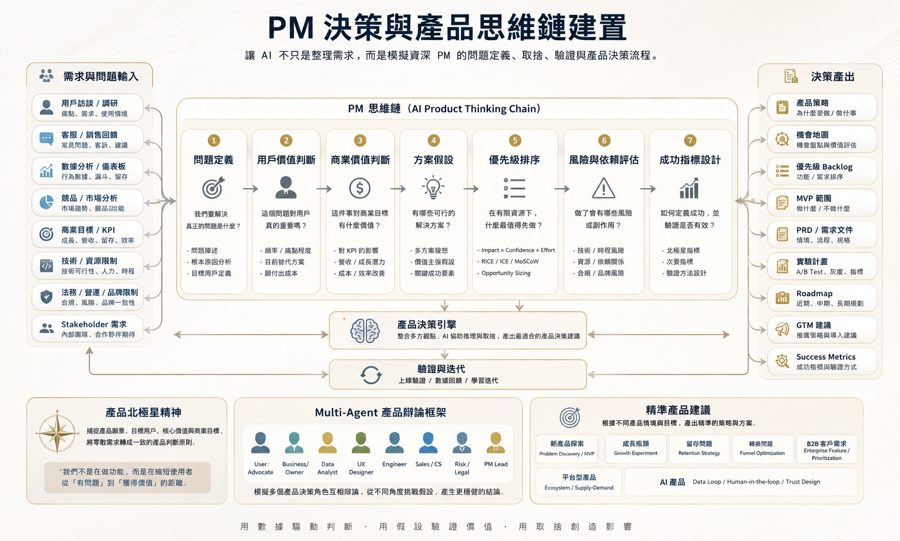

PM 決策與產品思維鏈建置
讓 AI 不只是整理需求，而是模擬資深 PM 的問題定義、取捨、驗證與產品決策流程。 最終目標不是做更多功能，而是做出更正確的產品選擇。

核心概念
PM 的工作不是單純整理需求、排功能優先級，而是在眾多資訊與限制之中，做出最合理的產品判斷。 一個好的 PM 決策，需要同時考慮： 使用者是否真的有痛點、商業上是否值得做、數據是否支持、技術是否可行、資源是否足夠、風險是否可控，以及最後要如何驗證成效。
因此，PM 決策鏈的目的，是把零散的需求、數據、回饋與限制，轉換成有邏輯、可溝通、可執行的產品決策。
需求與問題輸入
在做任何產品決策之前，PM 需要先收集足夠的資訊。這些資訊就像醫生診斷前需要病歷、檢查報告與專科意見一樣， 是 PM 判斷問題的基礎。
| 輸入來源 | 說明 |
|---|---|
| 用戶訪談 / 研究 | 了解使用者真正的痛點、需求與使用情境 |
| 客服 / 銷售回饋 | 收集第一線常見問題、客戶抱怨與市場需求 |
| 數據分析 / 儀表板 | 從行為數據、轉換率、留存率中找出問題 |
| 競品 / 市場分析 | 了解市場趨勢、競爭者策略與差異化機會 |
| 商業目標 / KPI | 確認產品決策是否對成長、營收、留存或效率有幫助 |
| 技術 / 資源限制 | 評估開發成本、技術可行性、人力與時程 |
| 法務 / 營運 / 品牌限制 | 確認是否有合規、營運或品牌風險 |
| Stakeholder 需求 | 整合公司內部不同部門的期待與限制 |
這些輸入不會直接變成產品功能，而是先進入 PM 思維鏈，經過分析、取捨與驗證設計。
PM 思維鏈：七個決策步驟
PM 思維鏈是整個架構的核心。它幫助團隊把「我們要不要做這件事」拆解成一連串清楚的判斷問題。
1. 問題定義
第一步不是想解法，而是先確認問題是什麼。很多產品失敗，不是因為功能做得不好，而是因為一開始就解錯問題。
例如：使用者流失不一定代表要做更多功能——也可能是 onboarding 太複雜、價值感不清楚、價格不合理，或目標用戶根本不精準。
2. 用戶價值判斷
確認問題後，判斷這個問題對使用者是否真的重要。不是所有需求都值得做——有些只是少數人的偏好，有些問題雖然存在但使用者並不在意。
重點：產品不是做「有人說想要」的功能，而是解決「足夠重要、足夠明確」的使用者問題。
3. 商業價值判斷
產品決策不能只看使用者需求，也要連結公司的商業目標：
- 是否能提升轉換率、提高留存、增加營收？
- 是否能降低營運成本、提升市場競爭力？
- 是否能強化品牌或產品定位？
這一步避免團隊投入大量資源，做出「使用者覺得不錯，但對公司目標幫助有限」的功能。
4. 方案假設
PM 不應該一開始就鎖定單一解法，而是建立多個可能的產品假設。以「提升新用戶啟用率」為例：
| 假設 | 可能方案 |
|---|---|
| 使用者不知道下一步該做什麼 | 優化 onboarding 流程 |
| 使用者太晚感受到產品價值 | 縮短 Time to Value |
| 使用者缺少範例 | 提供模板或推薦案例 |
| 使用者不信任產品結果 | 加入說明、預覽或人為確認機制 |
重點：PM 不是直接決定「做什麼功能」，而是先提出「什麼解法可能有效」，再透過優先級與驗證機制來選擇。
5. 優先級排序
資源永遠有限，所以必須取捨。排序的目的不是找出所有值得做的事，而是找出現在最值得先做的事。
| 評估面向 | 說明 |
|---|---|
| Impact | 對使用者或商業目標的影響有多大 |
| Confidence | 我們對這個判斷有多大把握 |
| Effort | 需要投入多少開發、人力與時間成本 |
| Reach | 影響多少使用者或客戶 |
| Urgency | 是否有市場、客戶或時程上的急迫性 |
可使用 RICE、ICE、Impact × Confidence ÷ Effort 等方式，讓優先級判斷更透明、更容易和團隊溝通。
6. 風險與依賴評估
一個產品決策不只要看「好處」，也要看「副作用」：
- 技術上是否可行？是否會增加技術債？
- 是否會影響既有使用者體驗？是否需要其他團隊配合？
- 是否有資料、法務、隱私或品牌風險？是否會讓產品變得更複雜？
這一步避免團隊只看短期成效，卻忽略長期維護成本與潛在風險。
7. 成功指標設計
最後，定義什麼叫做成功。好的產品決策不能只用「有沒有上線」衡量，而要用結果衡量：
| 目標 | 指標範例 |
|---|---|
| 提升啟用 | Activation Rate、完成首個關鍵行為比例 |
| 提升留存 | D1 / D7 / D30 Retention |
| 提升轉換 | 註冊轉換率、付費轉換率、試用轉付費比例 |
| 提升效率 | 操作時間降低、客服工單下降 |
| 提升體驗 | NPS、滿意度、任務完成率 |
| 提升營收 | ARPU、MRR、客單價、續約率 |
這一步確保團隊不是「做完功能就結束」，而是能清楚判斷這個決策是否真的有效。
產品決策引擎
當 PM 思維鏈完成分析後，進入「產品決策引擎」——把多方資訊整合成具體判斷：
- 哪些問題最重要？哪些方案最有機會成功？
- 哪些事情應該先做？哪些需求應該延後或不做？
- 第一版 MVP 要做到什麼程度？上線後要如何驗證？
這裡的重點是取捨。PM 的價值，不在於把所有需求都接下來，而是能說清楚： 為什麼現在做 A 不做 B；為什麼這個版本做到這裡就好；為什麼這個方向值得投入。
決策產出
經過 PM 決策鏈後，最終產出一組清楚、可執行的產品建議：
| 決策產出 | 說明 |
|---|---|
| 產品策略 | 說明產品方向、目標用戶、核心價值與商業目的 |
| 機會地圖 | 梳理不同產品機會，判斷哪些最值得投入 |
| 優先級 Backlog | 將需求與功能依照價值、成本、風險排序 |
| MVP 範圍 | 定義第一版要做什麼、不做什麼 |
| PRD / 需求文件 | 描述功能目的、使用情境、流程、規格與驗收標準 |
| 實驗計畫 | 設計 A/B Test、灰度測試、觀察指標與驗證方法 |
| Roadmap | 規劃短期、中期、長期的產品發展節奏 |
| GTM 建議 | 規劃產品如何推廣、導入、包裝與溝通價值 |
| Success Metrics | 定義成功指標與成效追蹤方式 |
這些產出讓產品決策從「想法」變成「可以被團隊理解與執行的計畫」。
Multi-Agent 產品辯論框架
在複雜產品決策中，單一視角很容易有盲點。透過 Multi-Agent 產品辯論框架，模擬不同角色的觀點互相挑戰：
| Agent 角色 | 代表觀點 |
|---|---|
| User Advocate | 使用者痛點與體驗 |
| Business Owner | 商業價值、營收與成長 |
| Data Analyst | 數據證據與指標判斷 |
| UX Designer | 使用流程、易用性與體驗品質 |
| Engineer | 技術可行性、開發成本與架構影響 |
| Sales / CS | 客戶需求、市場聲音與導入阻力 |
| Risk / Legal | 法務、合規、資料與品牌風險 |
| PM Lead | 整合觀點，做最終取捨與決策 |
這個框架的價值：讓產品決策不只是 PM 個人的直覺，而是經過不同角度檢驗後的綜合判斷。
底層三個核心能力
1. 產品北極星精神
產品北極星是所有決策的共同準則。它幫助團隊回答：我們到底在為誰創造價值？最核心的產品價值是什麼？哪些事情符合方向、哪些只是短期雜訊？
2. Multi-Agent 產品辯論框架
透過不同角色的模擬辯論，讓每個產品決策都能被挑戰與檢驗，降低三種常見風險：
| 風險 | 說明 |
|---|---|
| 只看使用者、不看商業 | 做出受歡迎但無法支撐商業目標的功能 |
| 只看商業、不看體驗 | 做出短期有效但傷害使用者信任的決策 |
| 只看需求、不看成本 | 做出難以維護、技術成本過高的產品 |
3. 精準產品建議
不同產品階段，需要不同的決策重點——避免用同一套方法處理所有問題：
| 產品情境 | 決策重點 |
|---|---|
| 新產品探索 | 找到真實問題、驗證 MVP |
| 成長瓶頸 | 找出漏斗問題，設計 Growth Experiment |
| 留存問題 | 提升使用頻率、價值感與習慣形成 |
| 轉換問題 | 優化價格、信任、流程與 CTA |
| B2B 客戶需求 | 評估客戶價值、共通性與客製化成本 |
| 平台型產品 | 平衡供需、規則、激勵與生態系 |
| AI 產品 | 建立資料回饋、信任機制與 Human-in-the-loop 流程 |
這套 PM 決策鏈解決什麼問題？
| 常見問題 | PM 決策鏈的幫助 |
|---|---|
| 需求太多，不知道先做什麼 | 用價值、成本、風險與信心排序 |
| Stakeholder 意見很多 | 用共同決策邏輯對齊討論 |
| 團隊只是在接需求 | 回到問題定義與產品目標 |
| 功能做完不知道有沒有效 | 事前定義成功指標 |
| 決策常靠直覺 | 引入用戶、數據、商業與技術證據 |
| 做了很多功能但產品沒有成長 | 聚焦真正影響北極星指標的機會 |
總結
它讓 AI 不只是協助整理需求，而是進一步模擬資深 PM 的產品思考方式——從問題定義、價值判斷、方案假設、 優先級排序，到風險評估與成功指標設計——幫助團隊產出更清楚、更有依據、也更容易執行的產品決策。
最終目標不是做更多功能，而是做出更正確的產品選擇。